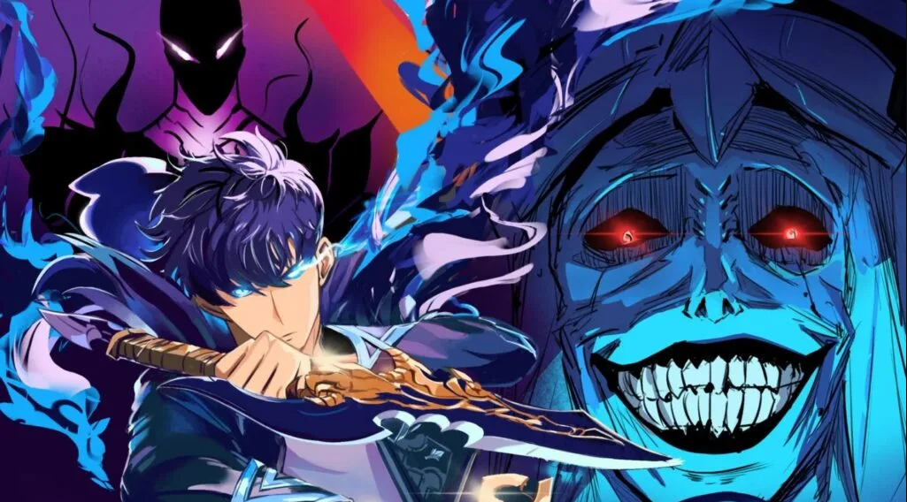
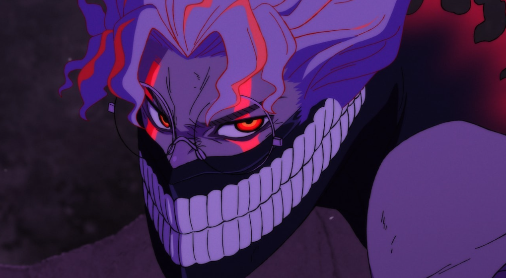
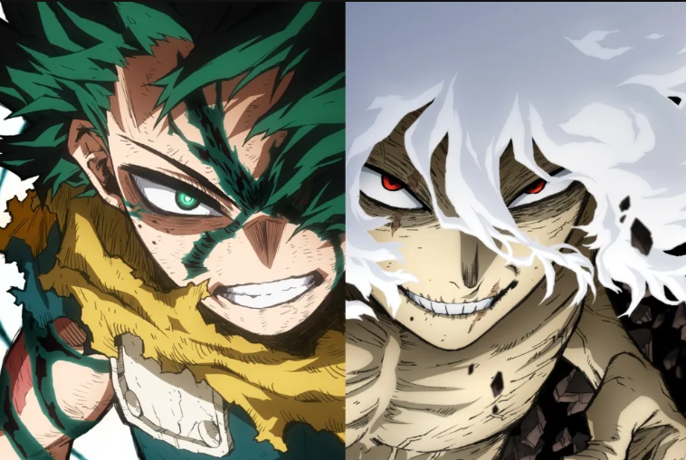
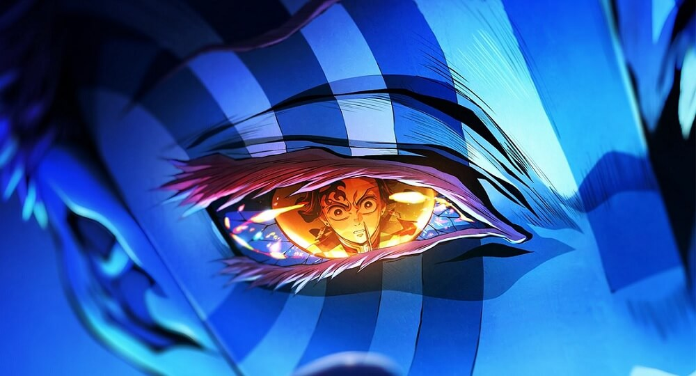
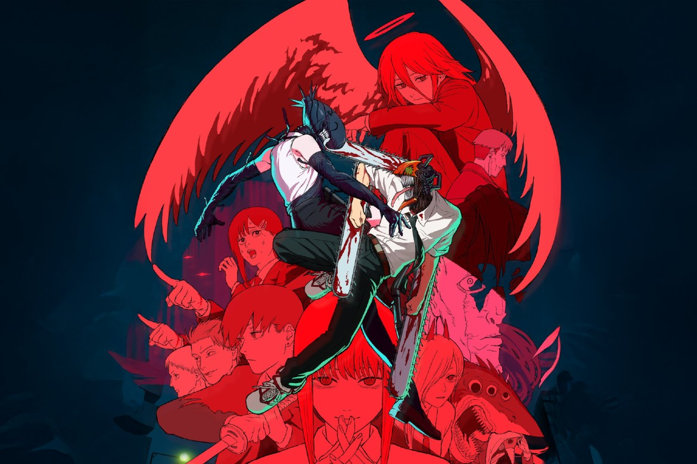
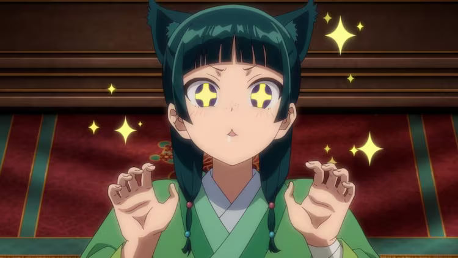
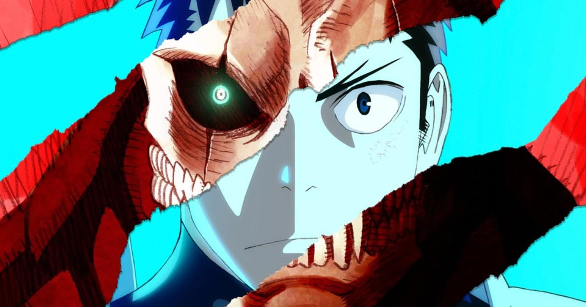
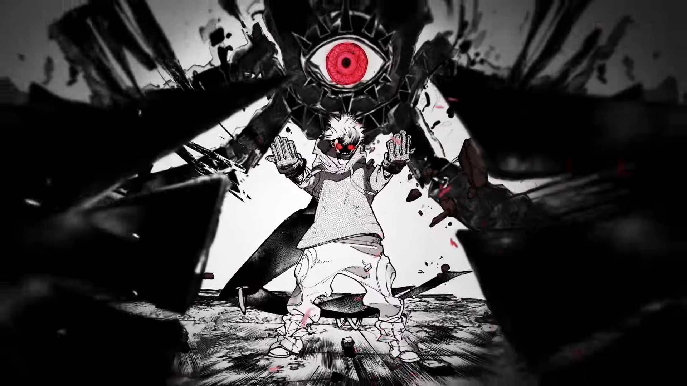

Os melhores animes de 2025 incluem continuações de sucesso como Solo Leveling (Season 2), DanDaDan (Season 2) e My Hero Academia (Final), além de destaques como To Be Hero X e outros fenômenos de bilheteria como Demon Slayer: Castelo Infinito e o filme de Chainsaw Man: Arco da Reze, consolidando um ano de grandes adaptações e desfechos, disponíveis em plataformas como Crunchroll Netflix e Prime Video.
Solo Leveling: Season 2

A 2ª temporada de Solo Leveling continua a jornada de Sung Jin-woo, adaptando
o arco do "Retorno ao Castelo Demoníaco", onde ele aprofunda seus poderes de
Monarca das Sombras, enfrenta inimigos formidáveis e descobre mais sobre os
segredos do Sistema, com destaque para a reviratação na Ilha Jeju e a ascensão
de Beru.
DandaDan: Season 2

DanDaDan 2 temporada continua com a aventura de Momo, Aira, Okarun e Jiji
continua com o arco da Casa Amaldiçoada, no qual os jovens devem enfrentar no
qual os jovens devem enfrentar poderosas maldições e Jiji precisa se livrar do
espírito que assombra a sua casa.
My Hero Academia - Final Season

A oitava e última temporada da série de anime My Hero Academia, focando na
Guerra Final entre heróis e vilões, com batalhas épicas de Deku, Bakugo e All Might
contra All For One e shigaraki, culminando na derrota de All For One e no
destino do mundo.
To Be Hero X

To Be Hero X é um aclamado donghua (animação chinesa) de ação e fantasia
que explora um mundo onde heróis ganham poderes da confiança pública,
sendo ranqueados por um índice de fé, com o "#1" sendo o "Herói X".
Demon Slayer: Castelo infinito

Demon Slayer: Castelo Infinito (Infinity Castle Arc) é a continuação épica que leva
Tanjiro e os Hashiras para a dimensão do vilão Muzan, o Castelo Infinito, para
a batalha final contra os demônios, após o traiçoeiro ataque de Muzan à Mansão
Ubuyashiki durante o Treinamento dos Hashiras, onde os heróis são transportados
para esse labirinto demoníaco para um confronto decisivo.
Chainsaw Man: Arco da Reze

O Arco da Reze em Chainsaw Man é um filme canônico que continua a história de
Denji após a primeira temporada, focando em seu romance com a misteriosa Reze,
uma garota que ele conhece em um café e que, na verdade, é o Demônio Bomba,
resultando em uma batalha épica e uma profunda exploração do desejo de Denji
por uma vida normal e amorosa.
Re:ZERO - Starting Life in Another World

Re:ZERO - Starting Life in Another World é um anime isekai sobre Subaru Natsuki,
um garoto comum que é transportado para um mundo de fantasia e ganha a habilidade
"Retorno pela Morte", revivendo momentos após morrer, sofrendo imensamente em
loops temporais para desvendar mistérios e salvar seus amigos, especialmente a garota
meio-elfa Emilia. A história foca em seu desespero, crescimento e na complexidade
de seus relacionamentos, usando sua habilidade para tentar mudar destinos trágicos
Diários de uma Apotecária

"Diários de uma Apotecária" (The Apothecary Diaries) é uma popular série de anime,
mangá e light novel sobre Maomao, uma jovem apotecária sequestrada e forçada a
trabalhar no palácio imperial, onde usa seu conhecimento em medicina e venenos
para desvendar mistérios e intrigas da corte, tornando-se a "detetive" relutante
do Pátio Interno, com o apoio do belo e misterioso eunuco Jinshi.
Kaiju No. 8

Kaiju nº 8 (ou Kaiju No. 8) é um mangá e anime sobre Kafka Hibino, um homem que
sonha em entrar para a Força de Defesa contra monstros gigantes (Kaijus), mas
acaba trabalhando na limpeza de seus restos, até que um dia, após um encontro,
ele ganha a habilidade de se transformar em um poderoso Kaiju, precisando agora
lutar contra os monstros enquanto esconde sua identidade secreta.
Gachiakuta

Gachiakuta é um mangá e anime shonen de fantasia sombria sobre Rudo, um garoto
marginalizado em uma cidade flutuante, que é injustamente acusado de assassinato,
jogado no "Abismo" (um lixão habitado por monstros de lixo) e descobre um poder
para transformar lixo em armas, buscando vingança e lutando por um lugar em um
mundo dividido entre ricos e desfavorecidos, explorando temas como valor,
sociedade e resíduos com uma arte única e elementos de ação e mistério